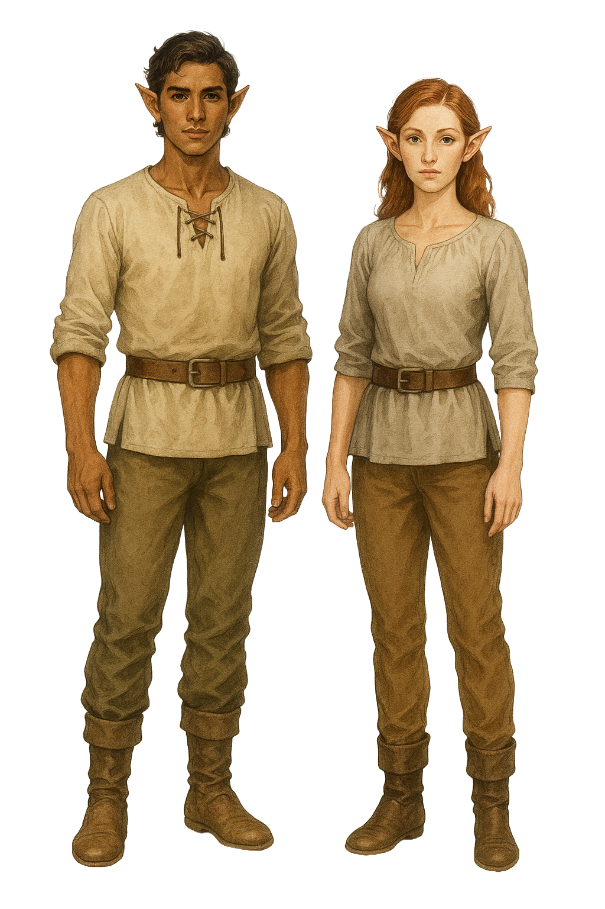

Half-Elf
"Blessed with both elven grace and human ambition, the Khoravar of Eberron are a people of bridges — between cultures, dreams, and storms."
Origins and Heritage
In Eberron, half-elves — known collectively as the Khoravar — have evolved into a distinct culture. While their origins lie in the union of elves and humans, most are now born to other half-elves. The Khoravar have formed a self-aware society that transcends simple lineage, proud of their ability to balance ambition with intuition, curiosity with heritage.
Physical Traits
Khoravar blend the aesthetics of their elven and human ancestors. Their ears taper to subtle points, their builds vary from lean to athletic, and their lifespans extend well beyond humans (averaging around 180 years). Eye and hair colors are varied, and they often favor practical but elegant dress suited to their travels or trades.
Appearance
Half-elves blend the features of their human and elven heritage. They may inherit the angular features, pointed ears, and lithe frames of elves, combined with the more varied statures of humans. Their skin tones range from pale to deep brown, often reflecting their human ancestry. Eye colors include green, blue, violet, hazel, or gray, occasionally with flecks of gold or silver. Hair may be fine or thick, straight or wavy, in colors from blond and auburn to black or silver.
Culture and Society
As a people who walk between traditions, Khoravar thrive in multicultural environments. They are often found in cities and trade hubs, working as diplomats, elemental pilots, artisans, or inquisitives. Their society encourages personal ambition and adaptability, and many Khoravar find purpose in crafting new traditions rather than clinging to old ones.
Dragonmarked Houses
Two of the powerful Dragonmarked Houses are composed almost entirely of Khoravar:
- House Lyrandar – Bearers of the Mark of Storm, they control airship travel and sea trade. Their seat of power is Stormhome.
- House Medani – Bearers of the Mark of Detection, they work as inquisitives, bodyguards, and threat assessors.
Major Settlements
While Khoravar are found across Khorvaire, notable concentrations can be found in:
- Stormhome – House Lyrandar’s floating seat of power in Aundair.
- Sharn – The City of Towers, where Khoravar are found in every echelon of society.
- Passage – A major hub for House Orien, home to many Khoravar artisans and merchants.
- Regalport – A port city where Lyrandar influence runs deep.
Gameplay Traits
- Ability Score Increase: +2 Charisma, and +1 to two other ability scores of your choice
- Age: Mature at the same rate as humans but live around 180 years
- Size: Medium
- Speed: 30 feet
- Darkvision: 60 feet
- Fey Ancestry: Advantage on saving throws against being charmed, and magic can't put you to sleep
- Skill Versatility: Proficiency in two skills of your choice
- Languages: You can speak, read, and write Common and Elvish